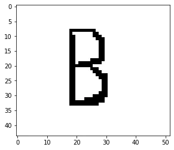
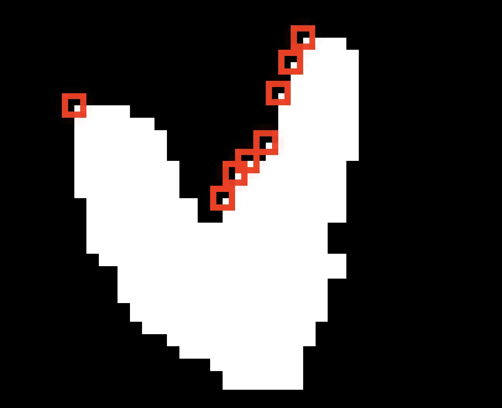
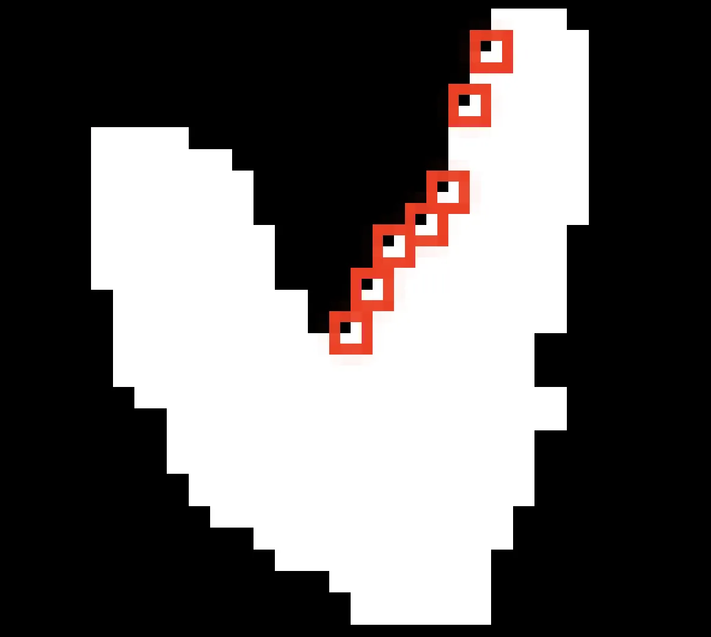
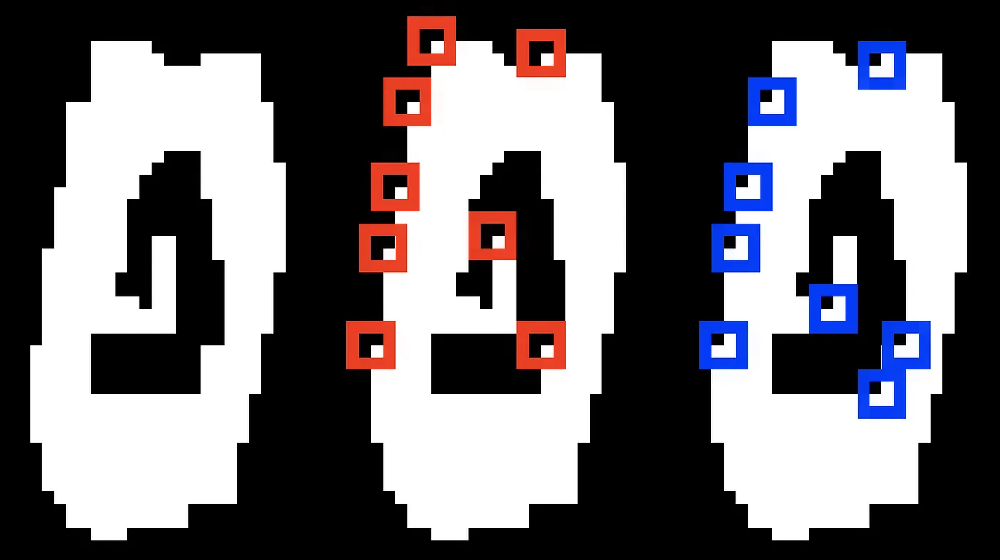
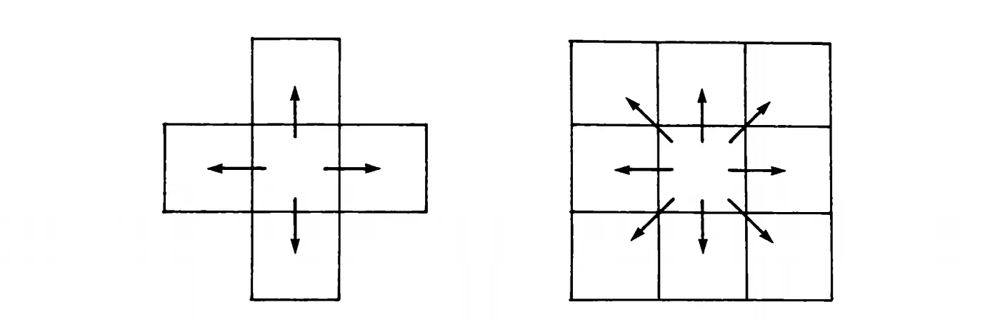

Let’s start with the basics: what is an Euler number? You may have seen this formula before, perhaps in a discrete mathematics class:
V stands for the number of vertexes, E the number of edges, and F the number of faces. In graph theory, if you have a planar, connected graph then its number of vertices, minus its number of edges, plus its number of faces (including the outside one) will always equal two. Always. There’s a great 3Blue1Brown video if you are curious for a proof.
This is also a topological property of shapes. For any convex polyhedron (like a square or pyramid), V-E+F=2. But two isn’t particular special in the grand scheme of things. An Euler number can be anything, even negative numbers.
A cube’s Euler number is two. To transform a cube to get a different Euler number requires a bit of work. Stretching the shape won’t help because Euler numbers are topological invariants, and a stretched shape is basically the same shape in topology. But adding a hole or a convex side? That’ll do it.
(insert joke about how topologist can’t tell the difference between a coffee mug and a doughnut here)
So if this V-E+F formula works for 2D graphs and 3D shapes, could it work for images? After all, a binary image is basically just an array of ones and zeros. Pretty similar to a graph.
The Euler number of an image comes from the formula
Where C is the number of connected components and H is the number of holes. Let’s say white denotes an object and black is the absence of that object. The letter ‘B’ therefore has three connected components, or three white spots (two enclosed in the letter and one that borders the image). There is also a ‘B’-shaped hole where the letter is. Therefore, the Euler number is 3–1=2.

So, how would a computer count the number of white spots? A human eye can do it with a simple look, but a computer would need to do a lot of iterating. This can be especially costly over large images and would be a bitch to parallelize. We need a method of calculating the Euler number locally.
The question is can we split the image up into parts where an operator computes over a fraction of the image and these results are later combined? It turns out the answer is yes. This result might seem a little weird–after all the Euler number is dependent on the number of holes and objects, and neither of those can be computed locally. But the combination of the two can! Geometry is weird like that.
We just need to count the number instances of these matrices:
We add the first and third and subtract the middle one. The formula is:
To make sense of this, let’s take a shape and mark all the points where the first matrix occurs. I am taking white as the foreground color here.

Notice that they are all on one side? It has to do with the difference between number of upstream-facing convexities and upstream-facing concavities. The first matrix will always occur on ‘convex’ edges where the shape is getting taller as seen reading from left to right.
The trick is to use one of these boxes as representation for the entire shape. Every object, no matter the shape, will have an M1 ◲ matrix. Try drawing it. You’ll quickly find that every object has an upper left hand side, and that upper left side is always M1 ◲.
Okay, but what about the other red boxes in the picture? We don’t want to double count our object (or in our case, count it 8 times). That’s where the second matrix comes in. Let’s label all the instances of M2 ◰ matrix.

Other than the upper left corner, they exactly cancel out! Subtracting the instances of these pixels is equivalent to counting connected components! Other than the top left corner, the only way to run across M1 ◲ is when the shape goes up and to the left. And all M1 ◲ obtained this way must have an M2 ◰ directly next to it.
What about holes? Like connected components can be represented by their top left corner, holes can be represented by their bottom right corner. M1 and M2 will mostly cancel again, and the result will be the Euler number.

What about that last matrix? M3. That one is to distinguish diagonals, because we are defining them as separate shapes.
Combining the counts of these three matrices, it gives an incredibly easy method to find an Euler number: loop through and count.
There is another subtlety here: are corner-adjacent cells considered neighbors, even when they are only connected by the diagonal? It depends on how we define the problem. There is the difference between the von Neumann neighborhood and the Moore neighborhood, or four-connectedness and eight.

The above formula only works for 4-connectedness, although eight-connectedness isn’t much harder to implement.
Going back to our original formula for Euler’s number, V-E+F. We can actually translate this more directly into our image definition. Counting the number of foreground pixels ■ as vertices, edges as ▃ and ▏ and faces as groups of four pixels in a square ▉ we get a more visual equivalent of Euler’s number. This, it turns out, is exactly equivalent to our connected component definition above.
The Euler number doesn’t have a lot of practical applications, but it does occasionally show up in computer vision, especially medical image processing.